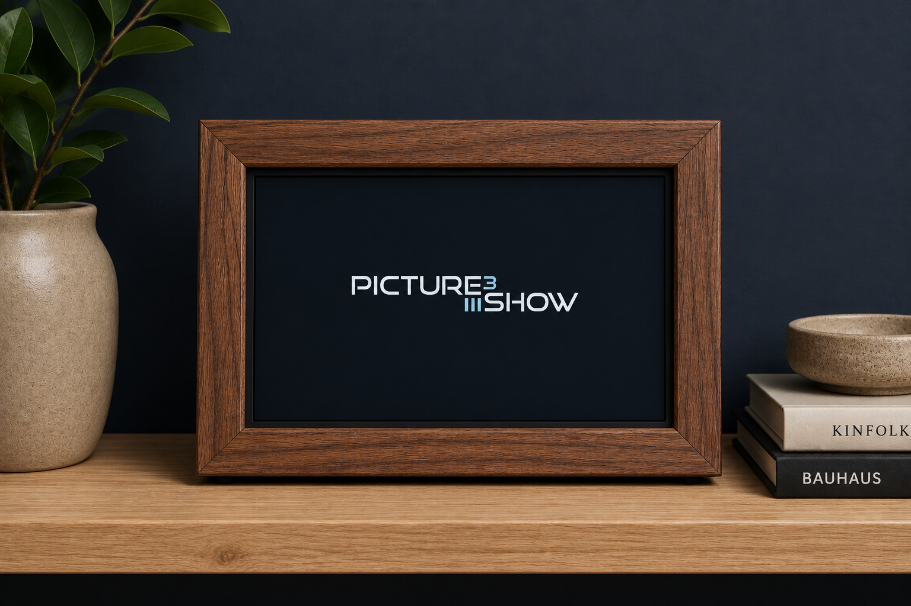
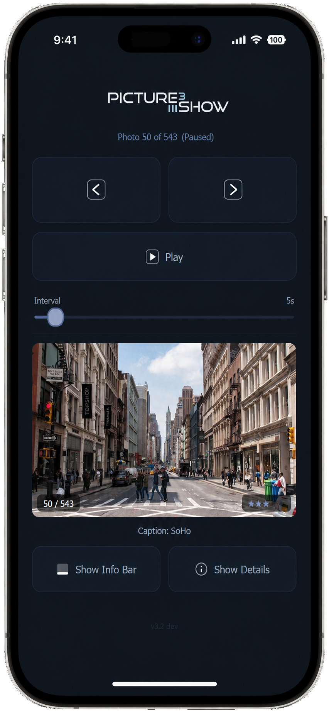
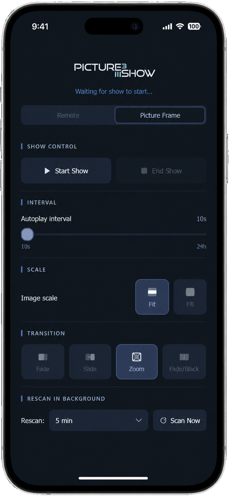

Picture Frame Mode

Your photos, on display
Turn an old laptop or a Raspberry Pi into an always-on digital picture frame — controlled entirely from your phone, no app to install.
Picture Frame Mode

Turn an old laptop or a Raspberry Pi into an always-on digital picture frame — controlled entirely from your phone, no app to install.

Scan the QR code or open the frame's URL in any browser on the same Wi-Fi. No app to install, no account to create — the slideshow itself serves the page.

A second tab in the web UI is dedicated to the long-running, hands-off use case. Start and stop the show, tweak playback, and schedule background scans without ever touching the device itself.
The same endpoints the phone calls are also yours to script. Wire the frame into Home Assistant, a sunrise / sunset cron, a doorbell event — anything that can make an HTTP request.
# Start the show curl http://picture-frame.local:8765/control/start # Stop the show (plays the leave animation, then hides the window) curl http://picture-frame.local:8765/control/stop # Set autoplay interval to 30 seconds curl "http://picture-frame.local:8765/control/interval?value=30000" # Trigger a manual rescan of the source folder curl http://picture-frame.local:8765/control/rescan # Get JSON status (playing, current index, caption, rating, …) curl http://picture-frame.local:8765/status
A Raspberry Pi attached to a small LCD makes for a low-power, always-on picture frame — and a satisfying weekend project. Pick a screen that can run from the Pi's own USB port and there is no second power brick to hide.
Pi 4 or Pi 5 for smooth GPU transitions. Pi Zero 2 W works too if you keep it to fades.
A Waveshare HDMI LCD (7" 1024×600 is a sweet spot) — HDMI for video, single USB cable for power + touch.
16 GB is plenty for the OS; pair with a USB stick or network share for the photo library.
A real picture frame, a 3D-printed shell, or just a desk stand — your call.
Use the Raspberry Pi Imager to write the latest 64-bit OS to your microSD. Configure Wi-Fi and SSH up front so you can work headless.
HDMI cable from Pi to LCD, then a single USB cable from a Pi USB port to the screen for power and touch. No external supply needed.
Clone the repo, set up a virtualenv, and pip install -r requirements.txt. Python ≥ 3.14 and PySide6 ≥ 6.7 are the only hard dependencies.
Create a small unit file that runs python main.py --background /path/to/photos. systemd brings it back automatically after a power cut — and the slideshow itself resumes the show.
Visit http://<pi-ip>:8765 on any phone or browser on the same Wi-Fi, switch to the Picture Frame tab, and press Start Show. That's it.
--on-show-start and --on-show-stop flags to run a command
whenever the show starts or stops. On a Pi, that is the natural place to call
vcgencmd display_power 1 / 0 so the LCD only consumes
power while photos are actually on screen.
The picture frame mode ships with every release of picture show 3. Grab the latest build or the source and you're a few minutes from a working frame.